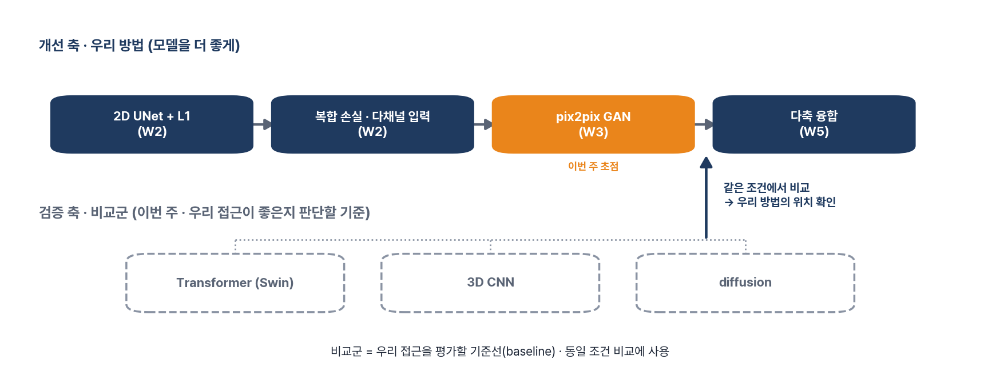
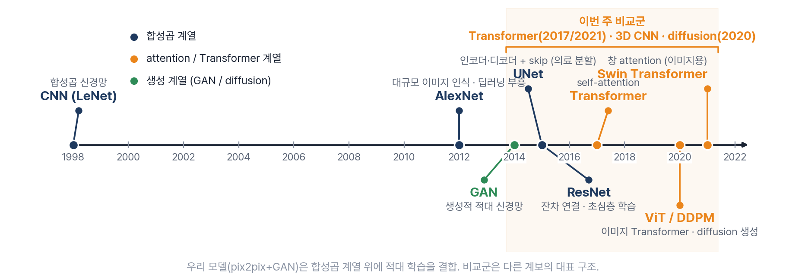
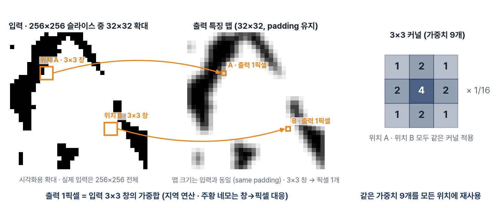
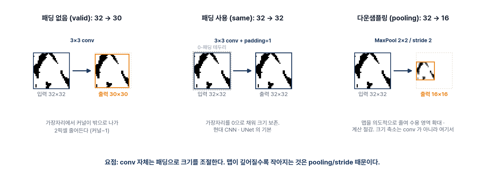
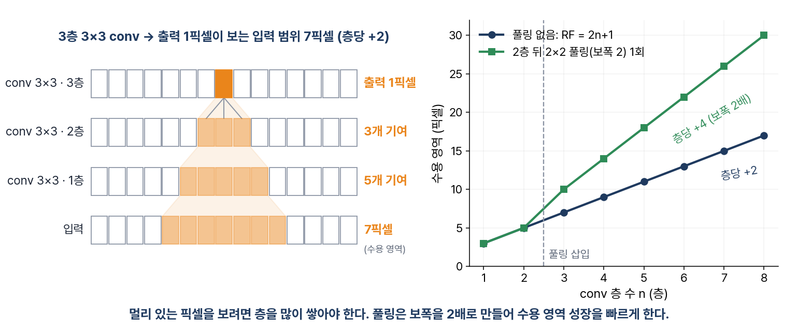
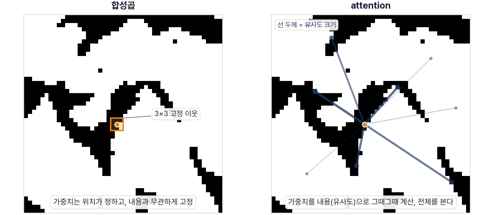
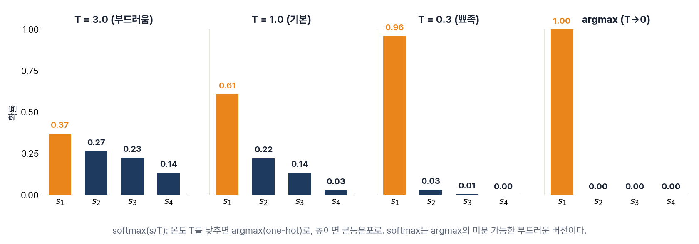
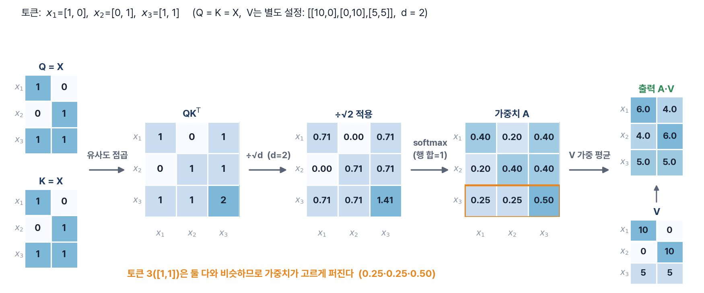
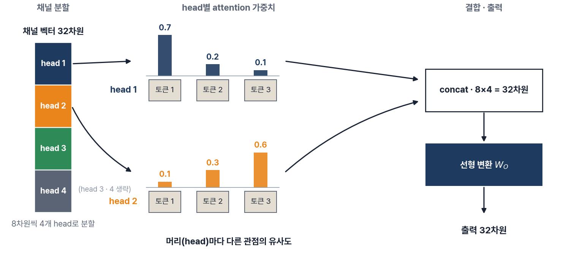
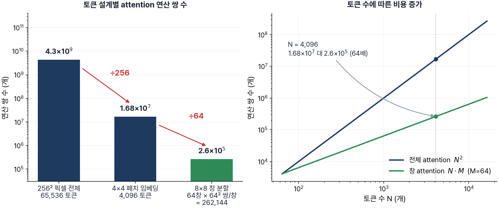
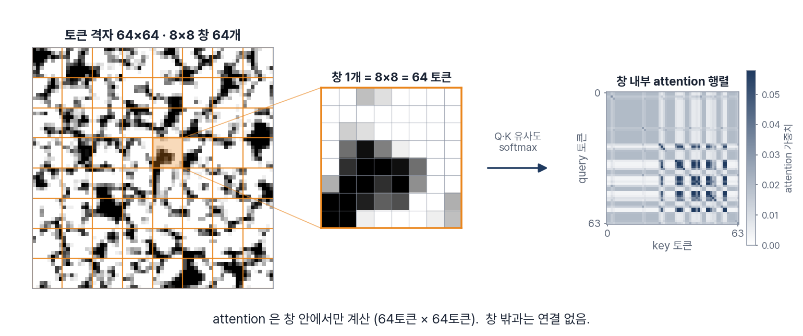
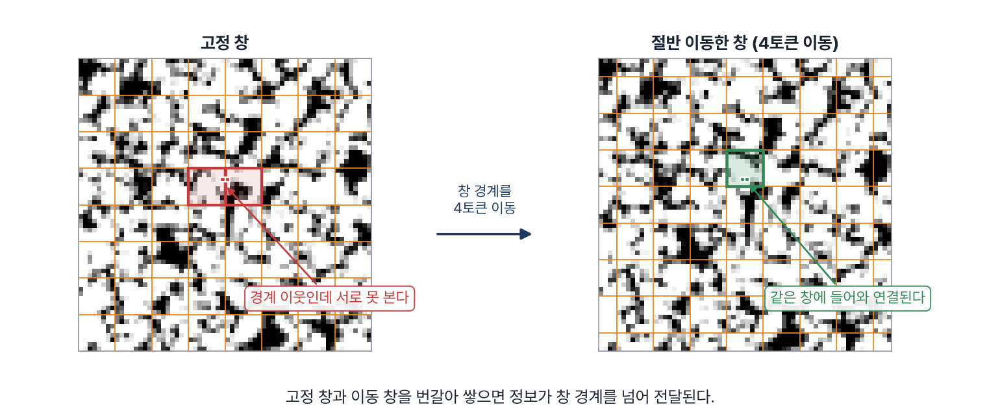
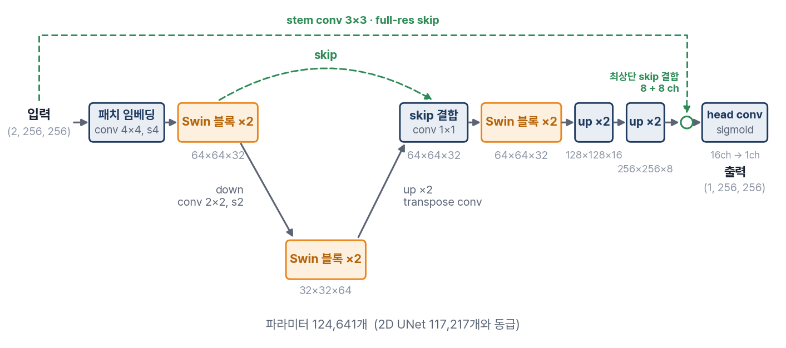
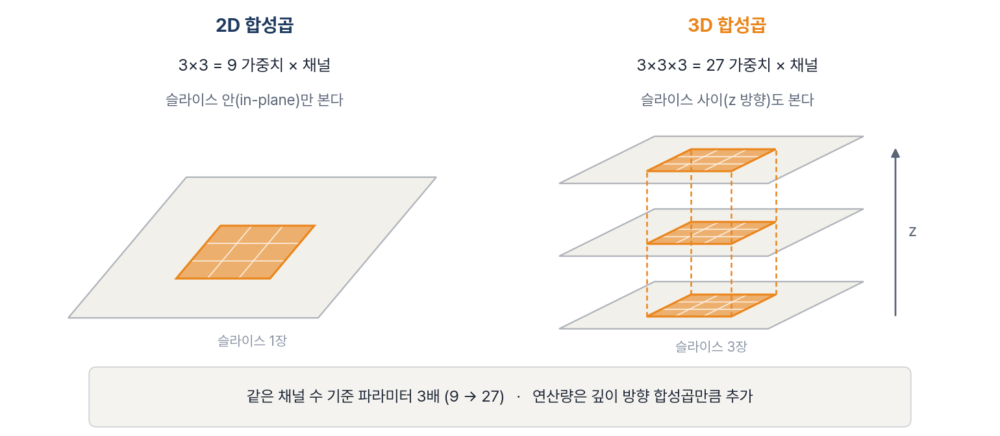
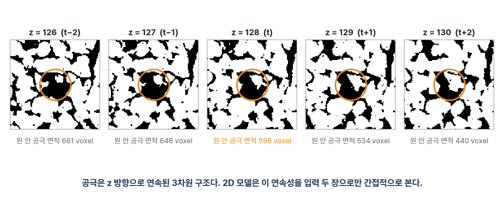
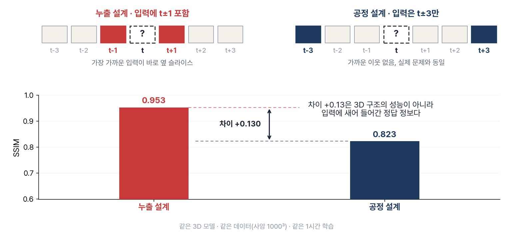
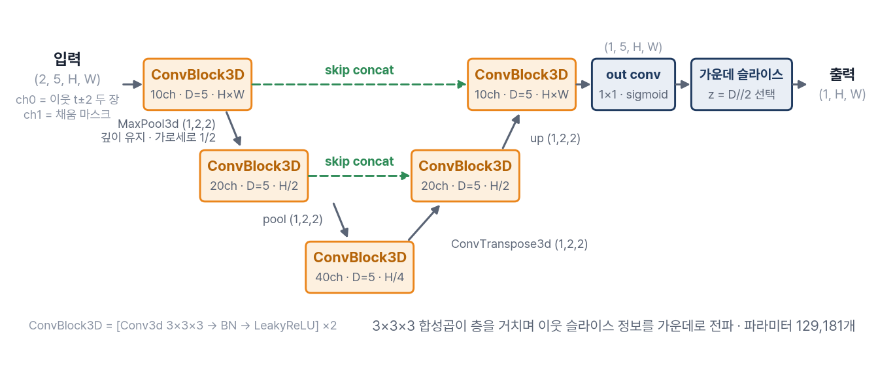
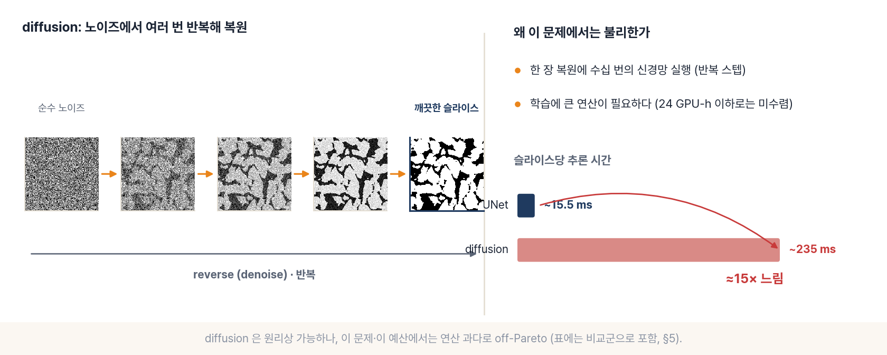
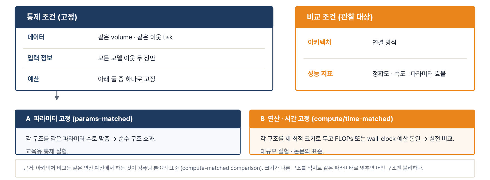
| 모델 | 구분 | 파라미터 | SSIM ↑ | |Δφ| (%p) ↓ | 비고 |
|---|---|---|---|---|---|
| MAPS (우리 모델) | 우리 방법 | 24.5M | 0.935 | 0.122 | pix2pix + GAN + 다축 융합 · 최우수 |
| 2D UNet · L1 | 비교군 | 24.5M | 0.932 | 0.265 | 우리 모델의 뼈대(GAN 이전) |
| SwinUNet (Transformer) | 비교군 | 1.10M | 0.926 | 0.343 | 파라미터 1/22 로 근접 |
| 3D UNet (공정 입력) | 비교군 | 3.15M | 0.914 | 0.402 | 부피 문맥, 스텝 비용 큼 |
| diffusion (잠재) | 비교군 | 17.2M | 0.510 | 14.8 | 우리 예산 미수렴(~1/12 연산) · off-Pareto |
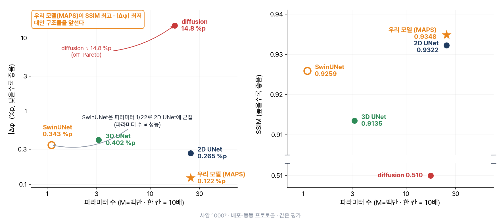
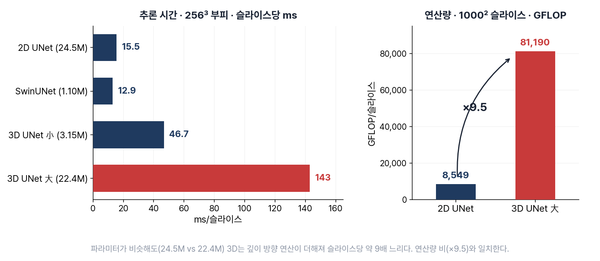
| window_partition | 창 단위 분할 |
| WindowAttentionMini | 창 attention (map 반환) |
| SwinUNetMini | 창 attention U-구조 |
| UNet3DMini | 3D 합성곱 U-구조 |
| Slice3DDataset | 공정 입력 3D 데이터셋 |
| benchmark_models | 공정 비교 루프 |
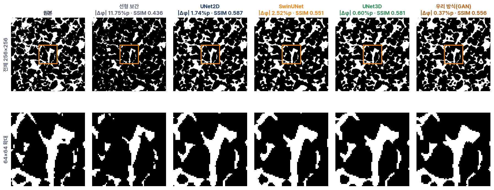
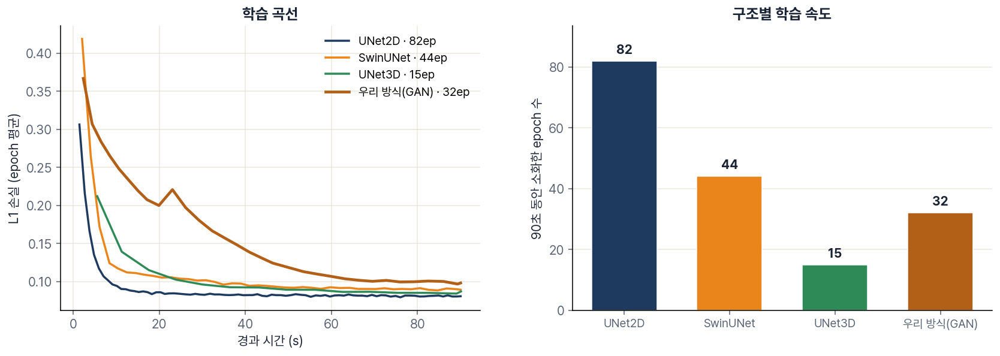